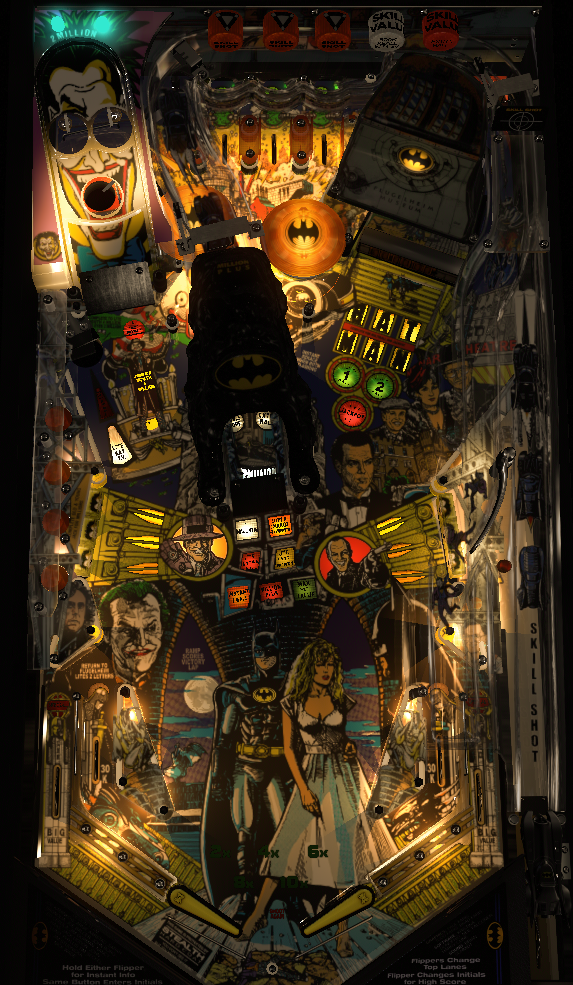

Not to be confused with other Batman-themed games, including Batman Forever (Sega, 1995), Batman: The Dark Knight (Stern Pinball, 2008), or Batman 66 (Stern Pinball, 2016), all of which have pages on The Pinball Primer.
The name of the game is Batman, but it really should have been Backhand. The only viable strategy for points is to try to always be in multiball, which requires constant shots to the Flugelheim Museum in the upper right. The Bat Cave partially blocks shots from the left flipper, so it is always safer to backhand the museum from the right. Make a skill shot or hit the museum 6 times to open it for lock 1; then, 2 ball multiball starts, and relocking both balls within 14 seconds of each other starts 3-ball, where continuing to bang on the museum will open it up for jackpots.
The skill shot is a precise power plunge into which of the three holes/top lanes is flashing and pointed to by the DMD. A successful skill shot scores 500,000 points times the current ball number and immediately opens the Flugelheim Museum for lock 1. Notice the skill shot setup: the plunge goes on a habitrail and the ball drops through a hole toward the top lanes. It is possible, though rare, for the ball to drop through a hole but then rattle into a different top lane; keep an eye out for this.
Skill shots are not available immediately after locks. For the (auto) plunge following a lock, the game will usually award the center ramp value on the plunge, if there is one.
A red lamp on the back panel of the game will sometimes be lit during the skill shot. When this lamp is on, a successful skill shot scores an extra ball. This seems to be the game's consolation ball feature, is it tends to only happen on ball 3 of a game with no other extra balls earned and short ball times.
The entire multiball sequence revolves around shooting the Flugelheim Museum in the top right of the game. This looks like a wide open shot, but from the left flipper, it is blocked more than you mgiht expect by the Bat Cave center ramp. It is pretty much always safer to shoot the Flugelheim as a backhand shot from the right flipper.
Step 1 of the multiball sequence is to open the Flugelheim. Hitting the Flugelheim awards one letter in the word Batman, or two letters if it was hit immediately after the ball rolled through the left in lane. Making a skill shot instantly awards all 6 letters and opens the museum immediately. Once the Flugelheim is open, shoot a ball into it to lock ball 1.
A second ball will then be fed to the plunger, and autoplunged. As soon as the second ball hits a switch, the first ball will be kicked out and 2-ball begins. The only new thing to do in 2-ball is to shoot both balls into the Flugelheim within 14 seconds of each other to relock them and upgrade to 3-ball play. If one ball drains during 2-ball, a 13-second multiball restart is available by putting the remaining ball in the Flugelheim; this restarts 2-ball, and 3-ball can still be qualified in the same way.
Once 3-ball starts, jackpots are available for the entirety of multiball, even if one ball drains. All jackpots require relocking two balls in the Flugelheim within 6 seconds of each other. Jackpot 1 is available right away and scores 5,000,000 points. After scoring a jackpot, the Flugelheim closes. Jackpot 2 scores 10,000,000 and requires hitting the Flugelheim two times to qualify first. Jackpot 3 scores 15,000,000 points and needs 6 hits to open the Flugelheim. I'm honestly not sure what happens after the third jackpot...given other Data East games of the era, that's probably all there is, with no more jackpots able to be scored that multiball.
If single ball play resumes while the jackpot is lit, the jackpot will remain available until its timer expires. If this happens and the jackpot is not collected during this grace time, there is a very small window after the jackpot times out where putting a ball into the Flugelheim will count as locking ball 1, and a second ball will be served to the plunger to start 2-ball regardless of whether or not the multiball restart has been used. Don't rely on this, but it's a neat thing when it happens.
The three standup targets on each side of the playfield are the Jack targets- Old Jack on the left, New Jack on the right. Hit a flashing target to light it. Any shot to up the center ramp will spot one Jack target for you. Completing both banks scores 2,000,000 points if the last target was hit directly, or 1,000,000 points if the last target was spotted with the center ramp.
Shooting the left scoop lights the center ramp for one of 7 awards. Shooting the left scoop immediately following a right in lane also awards a mystery score, usually between 100,000 and 250,000 points. Awards stay lit at the ramp until collected or changed; shooting the left hole when something is already lit at the ramp will change the lit award. Only one award can be lit on the center ramp at a time.
The center ramp usually directs the ball cleanly back to the right in lane. However, if exactly one bank of the Jack targets is completed and Millions Plus is not running, a diverter will throw the return feed from the left ramp out onto the playfield, usually directly at the left slingshot. A red lamp near the habitrail's right in lane exit will turn on to signal that the diverter is in play.
Upon achieving the replay score, the center ramp will be lit for a Victory Lap worth 3,000,000 points for 20 seconds.
At times, a Batcave award will be available on the center ramp for about 20 seconds. This seems to be activated during multiball more often than in single ball play, and seems to start up randomly. During this time, the center ramp will score 3,000,000 points one time (separate from the Victory Lap), and possibly an extra ball as well. An insert on the table indicates that Double Your Score may be a possible Batcave award as well, but I have never seen this occur in any game with any number of players. More information possibly needed here...
Two small green lights on the left side of the game's back panel indicate which of the two Joker eyes on the back left ramp have been hit. When just one has been hit, its position can be swapped with flipper lane change. Lighting both eyes starts a Shoot Joker bonus round, where for 20 seconds, the Joker's eyes score 2,000,000 points, and the Joker's mouth scores 4,000,000. The bonus round ends as soon as any of those values are scored. Shooting the Joker's mouth outside of the bonus round doesn't do anything. Any ball shot into any of the Joker ramp's holes will be kicked out of the left scoop. A common issue on Data East Batman is that the Joker's eyes occasionally fail to register; in this case, you will not be given credit toward the Shoot Joker bonus round, but you will get credit for shooting the left scoop.
Batman has a conventional in/out lane setup. Out lanes score the "Go with a Smile" big value, which I have seen be worth 100,000, 200,000, 300,000, or 400,000 points. Out lanes are also lit alternately for special the first time 10x bonus is achieved in the game. Specials can be set to alternate between the out lanes on slingshot hits, flipper lane change, or both. The right in lane briefly lights the left scoop for Mystery Score in addition to the random award put on the center ramp. The left in lane briefly lights the Flugelheim for two letters in Batman toward starting the multiball sequence.
By default, there is a center peg between the flippers.
Bonus is probably added by top lanes and Jack targets, possibly in/out lanes, and I'm not sure what else. Bonus multipliers are earned by completing sets of top lanes (in the order 2x-4x-6x-8x-10x) or shooting the center ramp when lit for Max X Value (instant 10x). The most base bonus I have ever seen is 167,000, but the true maximum is probably 200,000 in line with other Data East games of the era. Bonus is absolute garbage in this game! Do not be worried about tilting away the bonus when trying to save a ball. There is no holdover for base bonus or multiplier, and there is no mid-ball bonus collect.
I am not aware of a point value that can be assigned to extra balls or specials for competition/novelty play.
Shoot Joker bonus round (10-12-14-16-18 seconds) and Millions Plus (16-18-20-22-24 seconds) can have their timers adjusted. Defaults are 14 and 20 respectively. The timer for relocking balls 1 and 2 to start 3-ball multiball and the timer for scoring a jackpot cannot be changed from their default values of 14 and 6 seconds respectively.
This game has a Winner's Circle setting, which allows the winner of a multiplayer game to have a 20-second bonus ball with unlimited balls and ball save after all players have completed their proper turns. This can be disabled outright.